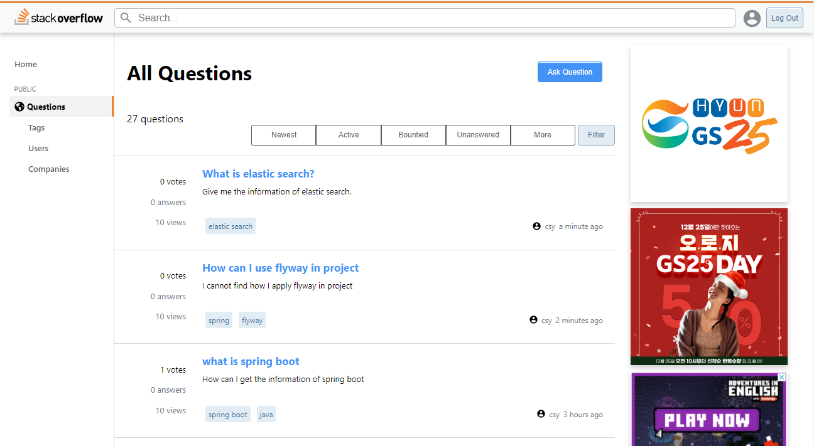

StackOverFlow

Project information
- Category: Web
- Project date: 2022.12 - 2023.01
- URL: https://client.prestack41-25.kro.kr/
- Github: https://github.com/orioncsy/seb41_pre_025
서비스 개요
기존의 StackOverFlow라는 웹사이트의 핵심 기능을 클론하여 제작한 웹사이트입니다. 사용자 개발 측면에 있어 질문이 생기면 게시글로 올리고 답변을 달 수 있는 서비스입니다. 질문과 답변에 vote를 할 수 있는 기능이 있습니다. up 버튼을 누르면 +1, down 버튼을 누르면 -1로 질문과 답변의 선호도를 표현할 수 있습니다. 태그 기능을 사용하여 질문과 답변에 관련 태그를 달 수 있습니다.
핵심 개발 사항
- Spring mvc 기반 Rest API 개발
- 질문 게시글 CRUD 구현
- 질문 게시글에 대한 vote 기능 구현
- 투표 총 결과 기능 구현
- 태그 기능 구현
- Spring Data JPA를 사용하여 ORM 활용
- asciidoc으로 api 문서 작성
- 질문에 대한 vote를 할 수 있는 api를 개발하였습니다. 위쪽 화살표는 +1, 아래 화살표는 -1을 투표할 수 있는데, api를 여러 개로 개발하지 않고 하나의 api로 개발하였습니다. +1, -1에 대한 정보를 parameter로 담아서 보내면 이미 같은 방향으로 투표를 하였다면 투표를 한것을 취소하고 반대에 투표를 하게 되면 기존 투표를 취소하고 새로 투표한 것을 적용하도록 하나의 API로 구현하였습니다. 또한 query문을 사용하여 모든 투표를 합하지 않고 투표를 할 때마다 해당 질문 엔티티 안에 있는 총 투표 결과의 값을 변경하는 방식으로 구현하여 db resource를 절약하였습니다.
- 질문을 게시할 때 태그 기능을 구현했습니다. 원하는 태그를 api에 담아서 요청하면 해당 태그가 기존에 있는지 확인하고 없다면 태그 repository에 추가하여 db에 저장을 하였습니다. JPA를 사용하여 다대다 관계를 위해 엔티티를 하나 더 생성하고 해당 질문과 태그를 매핑하여 db에 저장하였습니다.